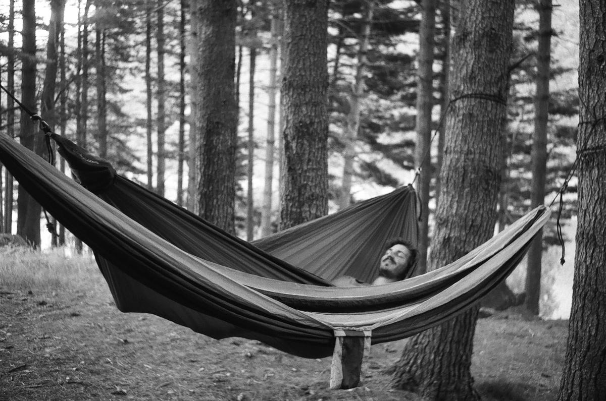

About
Bonjour, my name is Antoine Jaunard (1990) and I'm from Brussels, Belgium. I recently moved to Barcelona (ES) via a lovely detour by Amsterdam (NL).
This website is my digital studio, a place where I can experiment without constrains.
It's also my personal assistant, it helps me when I doubt on how to do something I've done before. It invites me to write (and then find) my personal knowledge online. A tool for documenting the things I learn.
This website is built with a custom static site generator that I wrote in Python. It's open-source by default, as all the things I (try to) do. Sources are available on Gitlab.
If you want to contact me, don't hesitate to send me a message on my encrypted email address or to follow me on an alternative social network that I trust. You can speak to me in French, English, Dutch (maar alleen een beetje) or Spanish (se amable, aprendo).
Oh, there is also my RSS feed.

Fab Academy (2020)
I'm currently following the Fab Academy at Fab Lab Barcelona.
This intensive program is about designing and prototyping projects using digital fabrication tools and machine, such as: computer-controlled cutting, electronics, 3D scanning and printing, electronics design,computer-controlled machining, embedded programming, molding and casting, networking and communications, mechanical design, interface and application programming and machine design.
Variable (2014-2019)
Together with Constant Mathieu, we'd run a small but good webdesign studio called Variable, from 2014 to 2019. We'd put emphasis on creating our own custom tools to stay task-specific, light and versatile.
During our journey, we had the chance to work for/with a music festival (Schiev), a web radio (The Word Radio), a contemporary art museum (MIMA), a centre for contemporary art and an independent cinema (Netwerk Aalst), few architecture offices (Office KGDVS, V+, A Practice), an art school (La Cambre), and many more.
Ecole de Recherche Graphique (2010-2014)
I'm graduated in Art and Graphic Design at the Ecole de Recherche Graphique (ERG) of Brussels. It was all about learning how to learn, hacking systems, building things without any budget, finding the right tone to communicate with others.